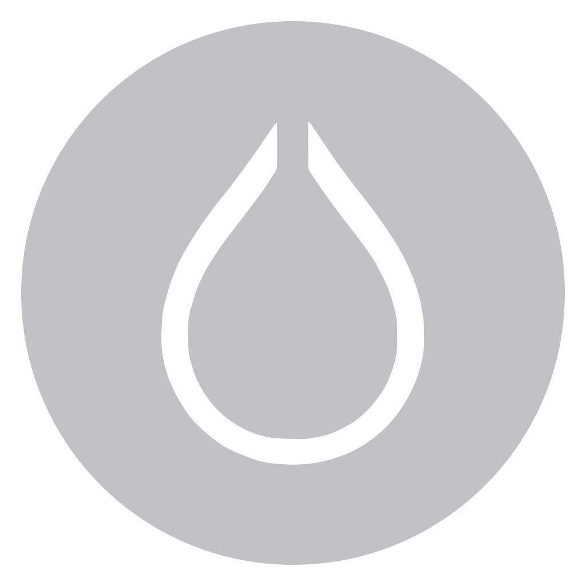
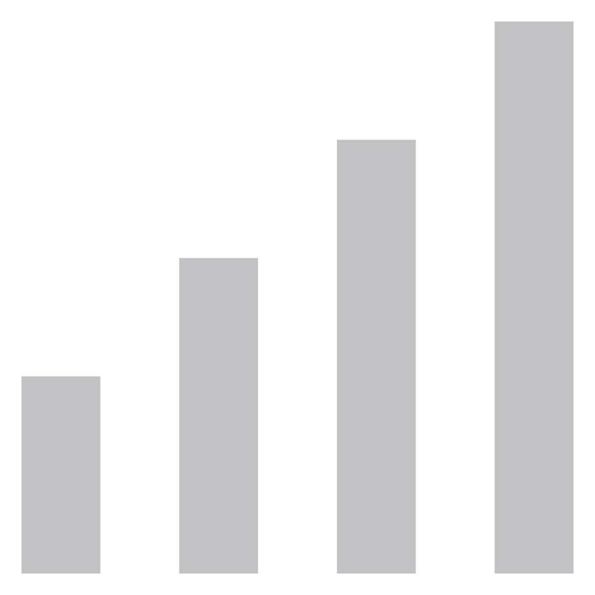
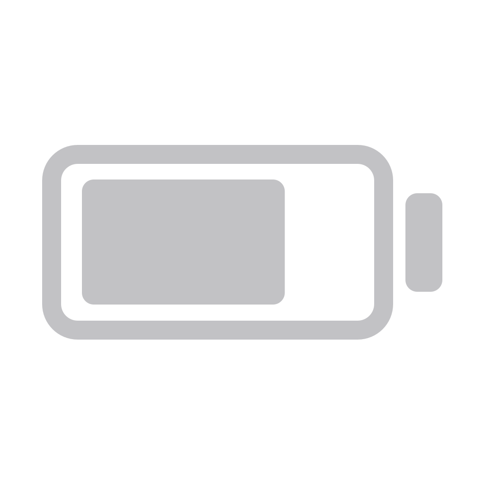
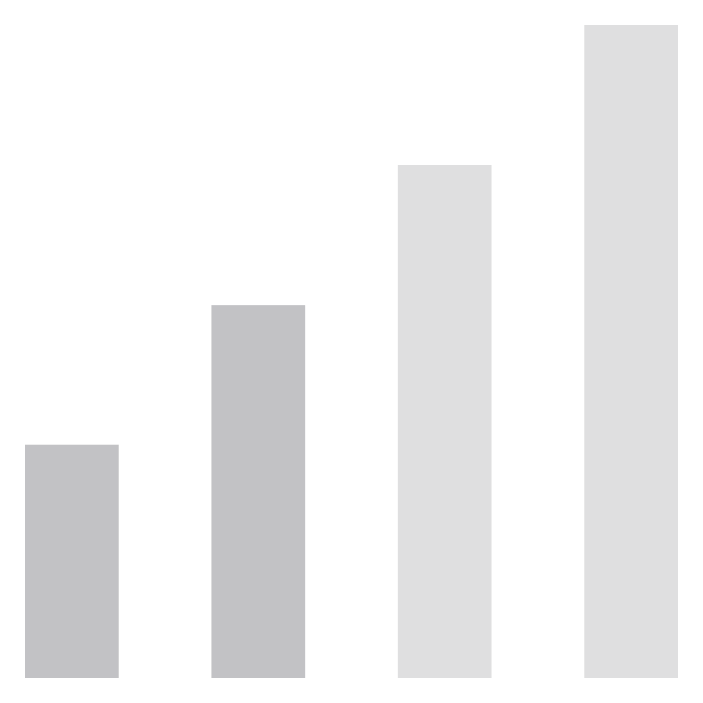
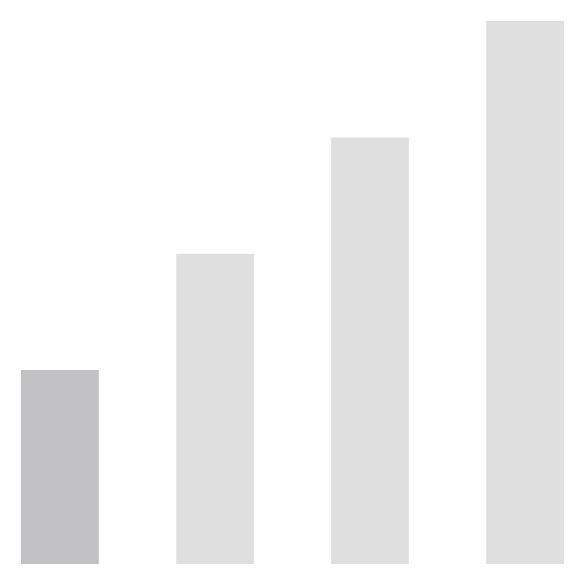
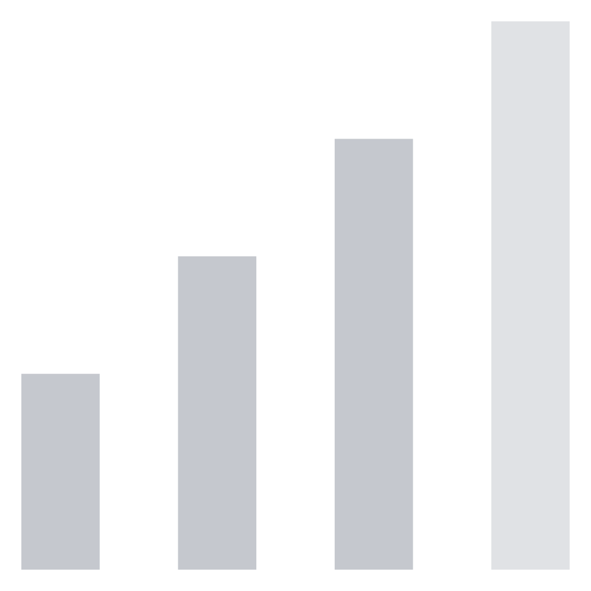
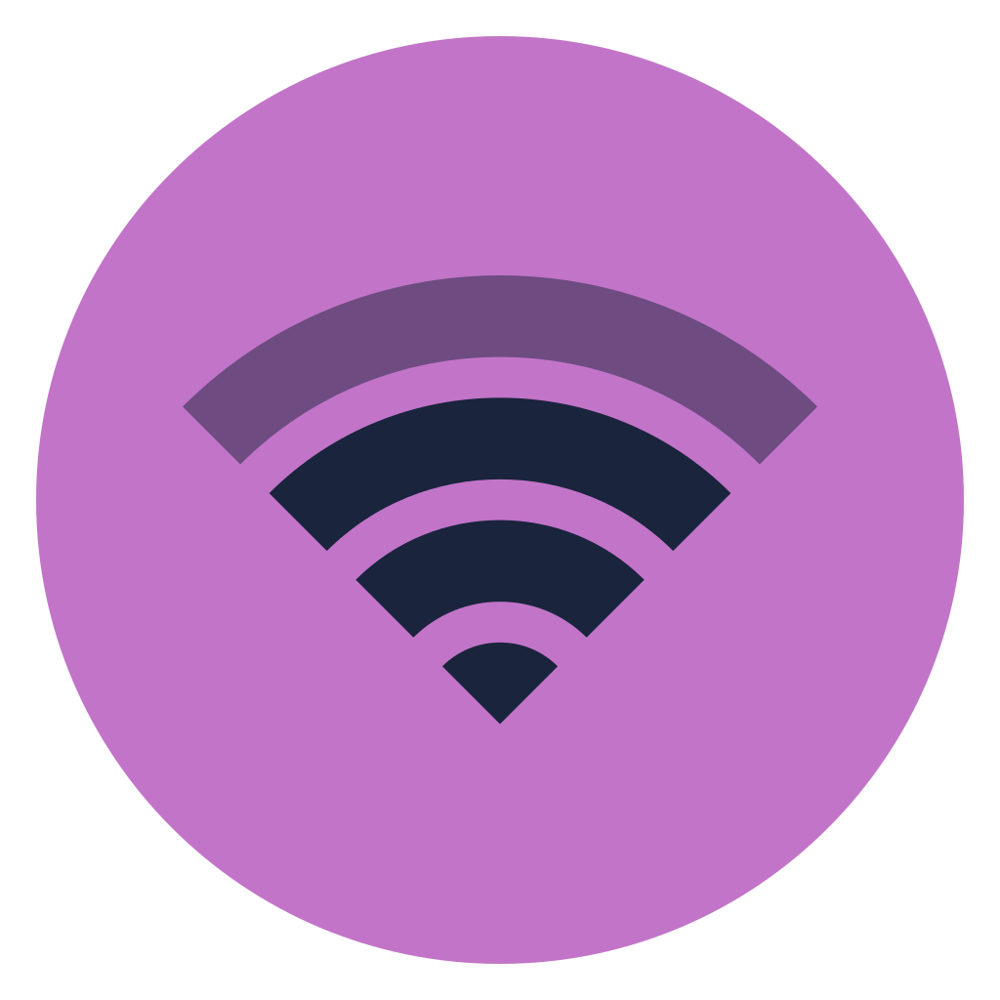

The panel side of the design. The main view is a stable list of capability tiles; the Bluetooth
tile keeps the bare-glyph power toggle. The subview header is where the parity fix lives:
Wi-Fi puts a Gtk.Switch in the trailing slot and today Bluetooth puts a 22 px
bare glyph in the same slot. Rendered side by side below so the difference is unarguable.
← index ·
panel-tile · panel-subview · panel-header-parity Interactive: every tile glyph is the power toggle · the ‹ glyph goes back to
MainView · Available Devices ▸/▾ · Unpair opens the inline
confirm · scroll both subview bodies — the header does not move.
Main view — the tile list exactly as it renders today · panel-tile
Wi-FiIlyushin-5G · 100%
›
BluetoothTOZO NC9 · 78%
›

HyprlandOpen Hyprmod
›
Display
Sound
MainView is a stable list: SECTION_ORDER renders Wi-Fi,
Bluetooth, Hyprland, Display, Sound into a single card stack at
spacing={8}. Adding a capability is appending a descriptor — no existing section
changes.
BluetoothOff
›
Off. The glyph is the real
settings-panel/bluetooth-off.svg, which ITR-rendered at
foreground #c2c2c5 — the panel's off treatment is a tint plus
opacity: .4, not a recolour layer. Click it to see it flip live.
BluetoothNot connected
›
Not connected. Powered, on, nothing joined. The glyph stays
bluetooth (amber) because the radio is on — the tile's subtitle carries
the state, the glyph carries the capability.
BluetoothPairing…
›
Pairing… — the tile subtitle mirrors WifiTile's
Connecting… for the same reason: the tile is often the only visible surface when
the popup is closed, so a wait that is in progress has to say so somewhere.
BluetoothTOZO NC9 · 78%
›
Connected with battery — <alias> · <battery>%, matching
WifiTile's <ssid> · <strength>% exactly. With no
Battery1 the tile reads the bare alias. The alias is BlueZ's, verbatim —
TOZO NC9, not "Your headphones".
Why the tile glyph stays, and why it is not the header control
CapabilityTile keeps IconToggle on the main-view tile only, where
the glyph has 34 px of room and no header to share with. Two different jobs, two different
slots: the glyph says which capability this is, the switch says is it on.
IconToggle is a Gtk.Button, so its clicked signal fires only
on genuine user activation — it does not carry the notify::active
self-oscillation hazard WifiSwitch was written to defeat. Both stay. But both now
forward an explicit value via setBluetoothPowered(enabled) instead of a blind
toggleBluetooth() read-modify-write: two surfaces can now both mount a toggle, and a
stale read is a rare but real way to write the wrong value.
The Bluetooth subview — pinned header over the shared body · panel-subview
Bluetooth
Adapter5C:F3:70:9B:AA:BB
Audio outputTOZO NC9
Paired

TOZO NC9Connected
Paired

78%

LG OM7560(07)
Paired

HONOR 400 Smart
Ready to pair
MX Keys
Ready to pair

Sony WH-1000XM5 Wireless Headphones
Ready to pair
The subview body is the same component as the popup body — same sections, same rows,
same footer. Only the header differs, and that difference is the fix.
Scroll this one: the header is a sibling of the
settings-scroll window, so it stays exactly where it is.
Bluetooth
Bluetooth is off
Same one-line collapse as the popup: adapter details, both sections and the footer are all
hidden while powered off. The header — and therefore the switch — stays, because the
switch is how you turn it back on.
The pinned-header rule.SubviewHeader.tsx exists because of a bug that has
already been paid for once: the header used to be rendered byWifiView and
BluetoothView, i.e. inside the scrolled window, so it scrolled away with the
content and the two surfaces behaved differently despite sharing one NavHeader
component. Same components, two different containers; the container is what decides whether
the header stays put. The subview scroll height is 339 px
(geometry.subview-scroll-height) — the panel's own budget, distinct from the popup's
maxContentHeight 420.
The parity fix — Wi-Fi subview beside the Bluetooth subview · panel-header-parity
Wi-Fi
ConnectionIlyushin-5G
Saved
Ilyushin-5GConnected
Secured

Cafe-Nebula
Secured
The reference.SubviewHeader's Wi-Fi branch:
trailing={<WifiSwitch active={wifiEnabled} sensitive={wifiReady}
onToggled={(v) => void setWifiEnabled(v)} />}. Same component vocabulary, different
slot, no new primitives.
Bluetooth
Adapter5C:F3:70:9B:AA:BB
Audio outputTOZO NC9
Paired
TOZO NC9Connected
Paired78%
After the fix. Same ‹ + title + Gtk.Switch in the same slot,
the same 42×24 track, the same @color_10 ON fill as the Wi-Fi header to its left.
setBluetoothPowered(v) forwards the explicit value.
Bluetooth
Bluetooth is off
Before — shown for contrast only, not proposed.trailing={<BluetoothToggle />}: a 22 px bare glyph where Wi-Fi has a
24 px switch. A user who has learned "the pill on the right of this header is the
radio" gets a bare glyph in one Bluetooth surface and the pill in the other, at identical
screen positions. Parity is not about looking alike; it is about doing alike.
The capability glyph is not lost.BluetoothToggle is not deleted — it is
demoted. CapabilityTile keeps IconToggle on the main-view tile (mock 1,
above), and the header slot becomes the switch (mock 2, left). One glyph, two jobs, two homes,
zero new primitives.